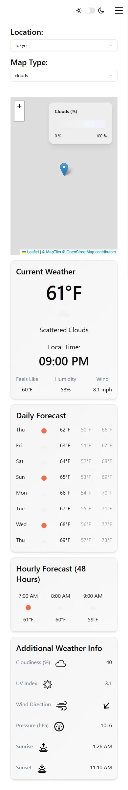

Responsive & Accessible Interfaces
Mobile-first layouts, breakpoints, grid and flex, keyboard use, contrast and alt text.
In step 23 the presenter spent almost an hour making the dashboard work from a phone to a wide monitor, with Tailwind breakpoints, a CSS grid, a mobile header and a sliding side panel. In step 24 they added light and dark mode, and in step 21 tooltips built on Radix. This chapter explains the ideas behind responsive design and then goes one step further, into accessibility: can people who use a keyboard, a screen reader, a small touch screen or reduced motion settings use this dashboard too?
Breakpoint values and component behaviour were read from the installed tailwindcss 4.1.15 and Radix packages. Contrast ratios were computed from the project's actual colour values with the WCAG formula. Accessibility findings were reasoned from the code and our test screenshots; no screen reader test was done.
Mobile-first, in one rule
Tailwind is mobile-first. That sounds like a philosophy, but in practice it is one mechanical rule: a class without a prefix applies at every width; a class with a prefix like md: applies from that width upward. Under the hood, md:grid-cols-2 becomes a CSS @media (width >= 48rem) rule. There is no "only on phones" prefix; the phone layout is simply what you write without prefixes.
So you design the narrow layout first, then add prefixed classes for what changes on bigger screens. Here are the breakpoints this project uses. The five standard ones come from Tailwind's theme.css; xs is added by the project in src/index.css with --breakpoint-xs: 500px; inside @theme inline.
| Prefix | Starts at | Defined in | What changes in this app |
|---|---|---|---|
| (none) | 0 | one column, mobile header with toggle and hamburger | |
xs: | 500px | project, index.css | header row instead of stacked, mobile header hidden, toggle moves into the header |
sm: | 40rem (640px) | Tailwind | not used |
md: | 48rem (768px) | Tailwind | two-column grid; labels sit beside the dropdowns |
lg: | 64rem (1024px) | Tailwind | side panel always visible, hamburger hidden, main area narrows |
xl: | 80rem (1280px) | Tailwind | not used |
2xl: | 96rem (1536px) | Tailwind | four-column, four-row grid that fills the screen height |
The presenter quotes the same numbers: LG is 1024 and MD is 768 (4:40:11), the 2xl view "once we get above 1536" is "what most computers are going to see" (4:58:43), and xs means "500 pixels or higher" (5:22:24). Pixel values assume the browser's default 16px text size; because Tailwind's breakpoints are in rem, they move if a user increases their default font size, which is a good thing for people who need larger text.
Reading the layout in App.tsx
The whole dashboard layout lives in two class lists. The header row:
<div className="flex flex-col gap-4 xs:flex-row xs:gap-8">
<div className="flex flex-col md:flex-row gap-2 md:gap-4">
<h1 className="text-2xl font-semibold">Location: </h1>Read it mobile-first: on a phone, the label/dropdown pairs stack vertically (flex-col); from 500px they sit in a row (xs:flex-row); from 768px each label also sits beside its dropdown (md:flex-row). Then the cards:
<div className="grid grid-cols-1 2xl:flex-1 2xl:min-h-0 md:grid-cols-2 2xl:grid-cols-4 2xl:grid-rows-4 gap-4">
<div className="relative h-120 2xl:h-auto col-span-1 md:col-span-2 2xl:col-span-4 2xl:row-span-2 order-1">
...
<div className="col-span-1 2xl:row-span-2 order-2"> {/* CurrentWeather */}
<div className="col-span-1 order-3 2xl:order-4 2xl:row-span-2"> {/* DailyForecast */}
<div className="col-span-1 md:col-span-2 2xl:row-span-1 order-4 2xl:order-3"> {/* HourlyForecast */}
<div className="col-span-1 md:col-span-2 2xl:row-span-1 order-5"> {/* AdditionalInfo */}(Lines 70–90 of the repo's App.tsx, shortened; the comments are added here.) Three tools do all the work:
grid-cols-Nsets how many columns the grid has at each width.col-span-N/row-span-Nlet a card stretch across several columns or rows. The map always spans the full width.order-Nchanges the visual order. At2xl, Hourly (2xl:order-3) comes before Daily (2xl:order-4) so the grid's automatic placement puts Daily in the right-hand column.

The side panel: hidden, sliding, then fixed
The air pollution panel is fixed top-0 right-0 h-screen w-(--sidebar-width), 23rem wide. Below lg it is pushed off screen with translate-x-full and slides in (transition-transform duration-300) when the hamburger sets isSidePanelOpen. From lg up, lg:translate-x-0! (the ! makes it !important) forces it into view, and the main area shrinks to lg:w-[calc(100dvw-var(--sidebar-width))] so nothing hides under the panel. The CSS variable --sidebar-width is defined once in index.css and used in both places, so they can never disagree.
Grid or flex?
Both are CSS layout systems and the project uses both. A simple way to choose:
Flexbox (flex) | Grid (grid) | |
|---|---|---|
| Thinks in | one direction: a row or a column | two directions: rows and columns |
| Sizes come from | the content of each item | the tracks you define |
| Typical use | a header row, a label beside a value, centring | a dashboard of cards that must line up |
| In this app | header, inside every card (flex justify-between), hourly strip | the card area in App.tsx |
The hourly strip shows one more responsive trick: flex gap-6 overflow-x-scroll. Instead of squeezing 48 hours into a phone screen, the row keeps its natural width and scrolls sideways.
Touch targets: big enough for a finger
On a phone, every button must be easy to hit. WCAG 2.2, the main accessibility standard, asks for targets of at least 24 × 24 CSS pixels (success criterion 2.5.8, level AA), with an exception when small targets have enough space around them. Many design systems aim higher, around 44px, for comfortable tapping. Measured from the classes in the project:
| Control | Classes | Size |
|---|---|---|
| Theme switch | h-[1.15rem] w-8 (shadcn switch.tsx) | about 18 × 32px: shorter than 24px |
| Hamburger button | a bare <button> around a size-6 icon | about 24 × 24px: just at the minimum |
| Pollutant info icons (tooltip triggers) | size-4 icon | 16 × 16px |
| Dropdown triggers | h-9, full width on phones | 36px high: comfortable |
A cheap fix is padding on the button rather than a bigger icon: className="p-2" around the hamburger makes the tappable area 40px while the icon stays 24px.
Keyboard and focus: what Radix gives you for free
Many people never use a mouse: keyboard users, switch-device users, screen reader users. Native HTML elements like <button> and <select> already work with a keyboard. Custom widgets (a styled dropdown, a toggle switch, a tooltip) normally do not, unless someone writes all the keyboard code and ARIA attributes. That is what the Radix primitives under shadcn/ui do. Checked in the installed packages:
- Select (
@radix-ui/react-select): the trigger hasrole: "combobox"; it opens with Space, Enter, Arrow Up or Arrow Down (OPEN_KEYS), and Space or Enter selects (SELECTION_KEYS). Screen readers announce it as a combo box with its current value. - Switch (
@radix-ui/react-switch): a real<button>withrole: "switch"andaria-checked, so it is focusable with Tab, toggles with Space, and announces "on/off". - Tooltip (
@radix-ui/react-tooltip): opens on focus as well as hover (it composes anonFocushandler), and closes with Escape.
The shadcn styles add a visible focus ring only for keyboard focus: focus-visible:ring-[3px] in switch.tsx and select.tsx. Never remove focus outlines without replacing them; a keyboard user who cannot see where focus is cannot use the page.
xs and lg (the hamburger is hidden from lg up). Tab order follows source order, which is one more reason to change visual order with CSS order only sparingly.Names for things: labels, alt text and ARIA
A screen reader announces each control by its accessible name. Buttons get it from their text, images from alt, inputs from a <label>. Several controls in the app have little or no name:
| Element | Problem | Fix |
|---|---|---|
Theme <Switch> | no label; the sun and moon icons are separate SVGs | aria-label="Dark mode" on the Switch |
| Hamburger button | only an icon (its SVG file happens to contain <title>hamburger</title>, not a helpful name) | aria-label="Show air pollution" |
| Chevron close button in the side panel | only an icon, no title | aria-label="Close panel" |
| Dropdowns | the "Location:" text is an <h1>, not connected to the Select | aria-label="Location" on SelectTrigger, or a <label> with matching id |
WeatherIcon | alt="Weather Icon" on every image says nothing useful | pass the description as alt, or alt="" when the text is right beside it |
| Headings | "Location:", "Map Type:", "Air Pollution" and "AQI" are all <h1> | one <h1> per page; use plain text or lower levels for labels |
<Switch
aria-label="Dark mode"
checked={theme === "dark"}
onCheckedChange={toggleTheme}
/>
<button aria-label="Show air pollution" className="p-2" onClick={() => setIsSidePanelOpen(true)}>
<Hamburger aria-hidden="true" className="size-6" />
</button>
// WeatherIcon: let the caller describe the image
<img src={`https://openweathermap.org/img/wn/${src}.png`} alt={alt} className={clsx("size-8", className)} />How to choose alt text: describe what the image tells the user, not what it is. In CurrentWeather, "scattered clouds" is printed right under the icon, so the icon adds nothing for a screen reader user: alt="" makes it skipped. In HourlyForecast, the icon is the only description of each hour, so it should get alt={hour.weather[0].description}. aria-hidden="true" does the same job as alt="" for decorative SVG icons, like the sun and moon next to the switch.
alt makes screen readers read the file name).Colour contrast in light and dark mode
Text must stand out from its background. WCAG measures this as a contrast ratio from 1:1 (same colour) to 21:1 (black on white). Level AA asks for at least 4.5:1 for normal text and 3:1 for large text (about 24px, or 19px bold). We computed the ratios for the project's real colours (shadcn zinc tokens from index.css and Tailwind's palette, against the solid card colour; the cards' slight gradient changes the result a little):
| Text | Where | Light mode | Dark mode |
|---|---|---|---|
Main text (foreground on background) | everywhere | 19.9:1 | 19.1:1 |
text-gray-500 labels | "Feels Like", "Humidity", Additional Info labels | 4.4:1 (just below 4.5) | 3.7:1 (below) |
text-gray-500/75 | Daily min/max temperatures | 2.8:1 (fails) | 2.6:1 (fails) |
muted-foreground on muted | inactive AQI badges | 4.4:1 | 5.7:1 |
text-red-500 on background | error messages from steps 25 and 26 | 3.8:1 (below) | 5.2:1 |
The simplest fix is to use the theme token instead of a fixed gray: text-muted-foreground is tuned separately for light and dark mode, while text-gray-500 is the same gray in both. For errors, text-red-600 dark:text-red-400 (or the theme's text-destructive) works the same way.
Contrast is not only about text. In our light-mode screenshots the OpenWeather cloud icons are white PNGs, and they nearly disappear on the light grey cards. The project's .dark svg { filter: invert(1) } rule fixes its own SVG icons for dark mode, but those weather icons are PNG images from OpenWeather and are not affected. A subtle background behind the icon, or a drop shadow, would keep them visible in light mode.
Colour should not be the only signal
The AQI badges in the side panel do this well: the current level is coloured and written as a word ("Good", "Fair"...). Someone who cannot tell green from orange still gets the information. The map legend is a colour gradient by nature, so its title and the numbers at each end carry the meaning.
Respecting reduced motion
Some people get dizzy or nauseous from movement on screen, and turn on "reduce motion" in their operating system. CSS can read that setting with the prefers-reduced-motion media query, just like prefers-color-scheme for the theme. The app animates in three places: every card fades in over 1 second (animate-[fade-in_1s_ease-out_forwards] in Card.tsx), pollutant cards grow on hover (hover:scale-105), and the side panel slides (transition-transform duration-300). Tailwind 4 has the variants built in (motion-safe: and motion-reduce:, compiled to @media (prefers-reduced-motion: ...)):
// animate only when the user has not asked for less motion
"motion-safe:animate-[fade-in_1s_ease-out_forwards] 2xl:flex-1"
// keep the slide, but make it instant for reduced motion
"transition-transform duration-300 motion-reduce:transition-none"A quick accessibility check you can do today
- Unplug the mouse. Press Tab through the page. Can you reach and operate every control? Can you always see where focus is?
- Zoom to 200% (Ctrl + +). Does anything overlap or get cut off? Rem-based breakpoints should switch to the phone layout.
- Run an automated audit in your browser's developer tools (Chrome's Lighthouse has an accessibility category). It finds missing names, missing alt text and low contrast; it cannot judge whether alt text is good.
- Turn on your OS screen reader for five minutes (VoiceOver on macOS/iOS, Narrator on Windows, TalkBack on Android) and listen to what the header controls are called.
- Switch themes and OS settings: light, dark, reduced motion. Check each.
- "
md:means tablets only." It means "768px and wider", including every desktop. - "Responsive means it shrinks." It means the layout changes: columns, order, what is visible, even scrolling direction.
- "Using Radix makes my app accessible." Radix makes the widgets operable; you still have to give them names, contrast and sensible order.
- "Every image needs a description." Decorative or repeated images need
alt=""; descriptions are for images that inform. - "A colour that looks fine on my monitor passes." Measure it, in both themes.
- "Accessibility is only for blind users." It covers low vision, motor, vestibular and cognitive needs, and people on a phone in the sun.
- Unprefixed classes apply everywhere;
xs:(500px, custom),md:(768),lg:(1024),2xl:(1536) apply from that width up. - The card layout is one grid:
grid-cols-1tomd:grid-cols-2to2xl:grid-cols-4, plus spans andorder. - Flex for one line of items; grid for a two-dimensional board.
- Targets at least 24 × 24px (WCAG 2.2 AA); add padding to icon buttons.
- Radix gives keyboard support and roles; you add
aria-labels, sensible headings and usefulalttext. - Aim for 4.5:1 text contrast in both themes; prefer theme tokens like
text-muted-foregroundover fixed grays. - Wrap decorative animation in
motion-safe:or switch it off withmotion-reduce:.
Learn more
- Tailwind CSS: Responsive design and Theme variables (custom breakpoints)
- Tailwind CSS: Hover, focus and other states (motion-safe, motion-reduce)
- Radix Primitives: Accessibility
- WCAG 2.2: Contrast (Minimum), Target Size (Minimum) and Non-text Content (alt text)
- WAI-ARIA Authoring Practices: Switch pattern and W3C: Developing for web accessibility
- MDN: prefers-reduced-motion and MDN: the img element (alt)